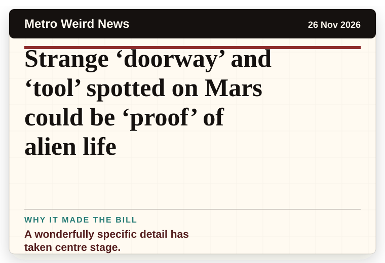
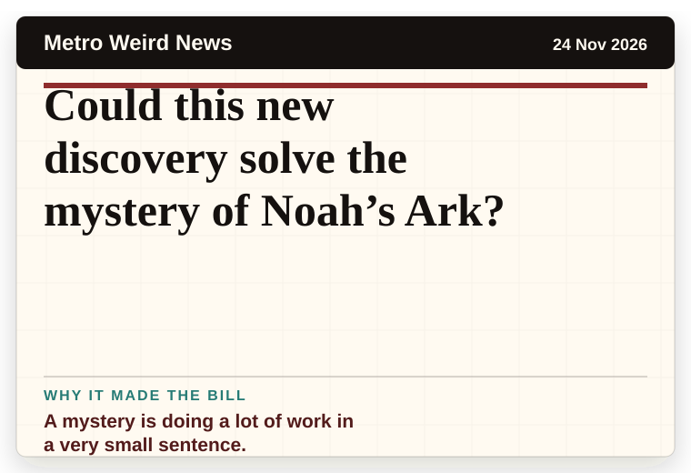
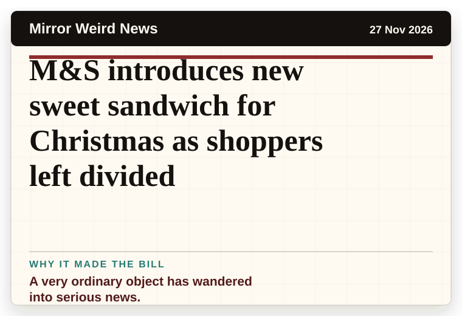
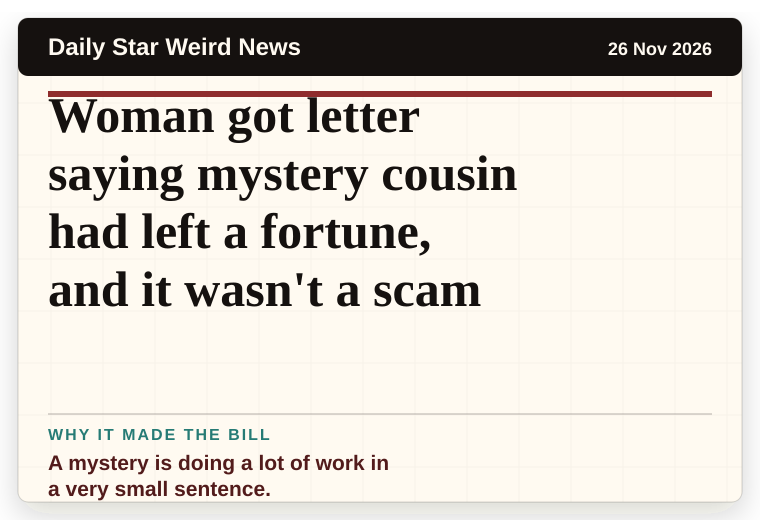
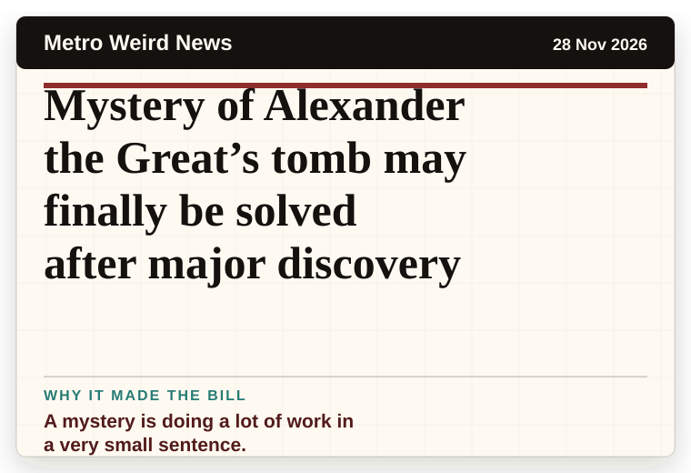
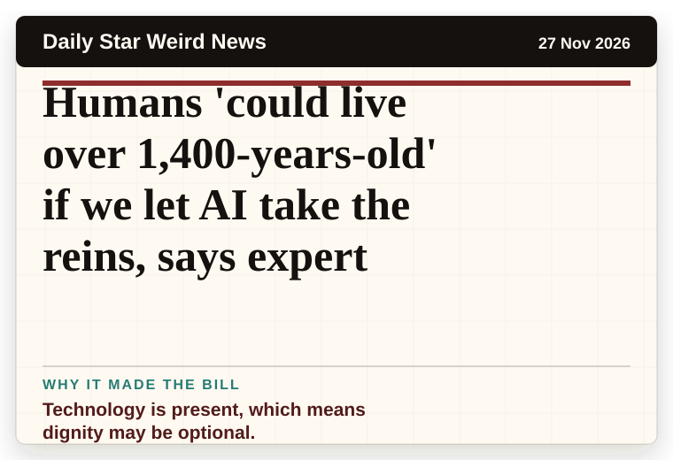
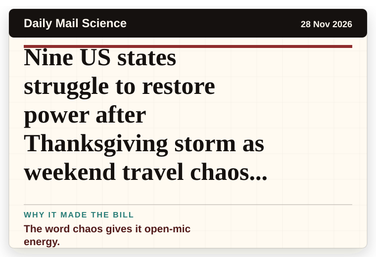
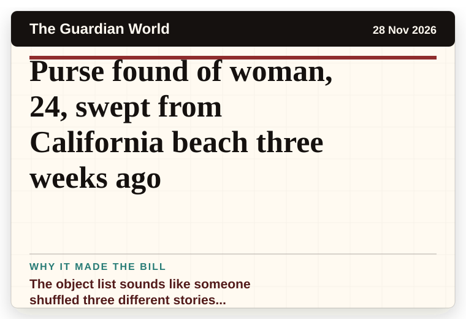
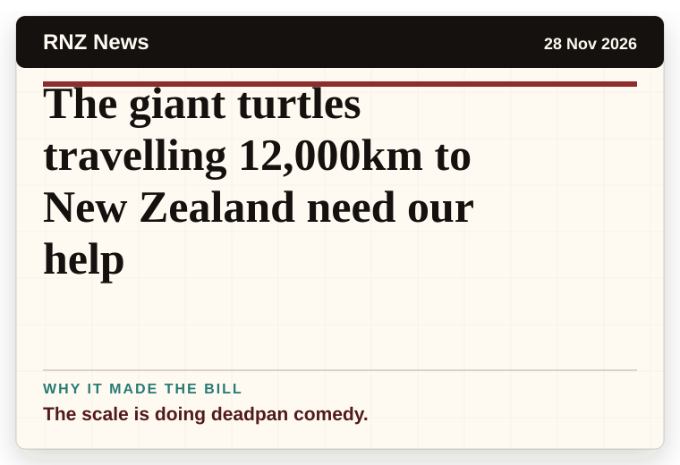

Metro Weird News
United Kingdom
Strange ‘doorway’ and ‘tool’ spotted on Mars could be ‘proof’ of alien life
A wonderfully specific detail has taken centre stage.
The latest daily picks, linked back to the original sources. Search the room, pick a source, or follow a headline out to the full story.
Record updated: 28 Nov 2026, 01:25 PM AEST
Showing 15 headline candidates from the refresh run completed on 28 Nov 2026, 01:25 PM AEST.

A wonderfully specific detail has taken centre stage.

A mystery is doing a lot of work in a very small sentence.

A very ordinary object has wandered into serious news.

A very ordinary object has wandered into serious news.

A mystery is doing a lot of work in a very small sentence.

A mystery is doing a lot of work in a very small sentence.

The second half quietly trips over the first half.

The word chaos gives it open-mic energy.

Technology is present, which means dignity may be optional.

A very ordinary object has wandered into serious news.

The headline is already trying not to laugh.

The word chaos gives it open-mic energy.

A wonderfully specific detail has taken centre stage.

The object list sounds like someone shuffled three different stories together.

The scale is doing deadpan comedy.